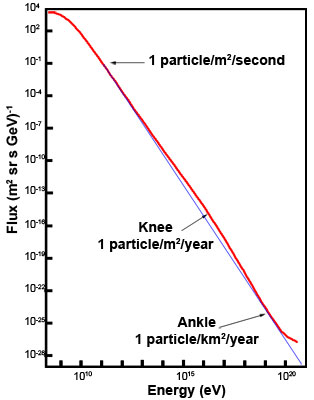

The range of energies encompassed by cosmic rays is truly enormous, starting at about 107 eV and reaching 1020 eV for the most energetic cosmic ray ever detected. By plotting this range of energies against the number of cosmic rays detected at each energy we generate a cosmic ray spectrum which clearly shows that the number of cosmic rays drop off dramatically as we go to higher energies.
Roughly speaking, for every 10% increase in energy beyond 109 eV, the number of cosmic rays per unit area falls by a factor of 1,000. However, if we look at the spectrum more closely we can see a knee at ~ 1015 eV and an ankle at ~ 1018 eV.
The origin of these changes in the steepness of the spectrum is still the subject of intense study, but it is assumed that they distinguish between populations of cosmic rays originating via different mechanisms. Current suggestions are that the cosmic rays with energies less than about 1010 eV are primarily solar cosmic rays produced in solar flares and coronal mass ejections, while those with energies between 1010 eV and the knee at 1015 eV are galactic cosmic rays produced in the shocks of supernova remnants. The origin of the cosmic rays with energies between the knee and ankle is unclear. They are again thought to be produced within the Galaxy, but the energies are too high for them to be accelerated by the shocks of supernova remnants. The origin for the ultra-high energy cosmic rays (UHECRs) below the ankle is also a mystery, but many have suggested that these may be created outside of our Galaxy.
If this is the case, the existence of UHECRs with energies above 5×1019 eV poses a problem for the theory of special relativity which predicts this energy as the theoretical upper limit to the energy of a cosmic ray. At energies beyond this Greisen-Zatsepin-Kuzmin limit (GZK limit), the cosmic ray should interact with the radiation of the cosmic microwave background within a distance of 150 million light years. This would reduce the energy of the cosmic ray to below the GZK limit, and we should not observe such high-energy particles if they come from distant sources.